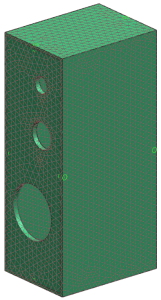

Update the display
Redisplay the mesh and polygon geometry for the front and back panels.
 Simulation Navigator
Simulation Navigator
-

 Polygon Body (2) (select)
Polygon Body (2) (select)
-
Polygon Body (3) (select)
-
3d_mesh(2) (select)
-
3d_mesh(3) (select)
-
